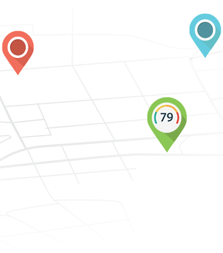
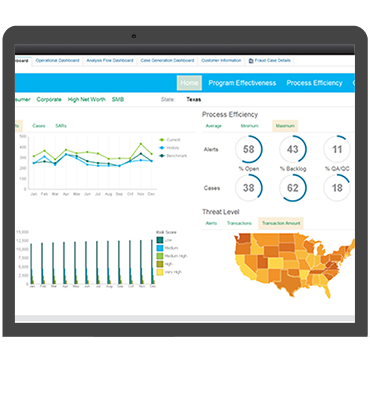
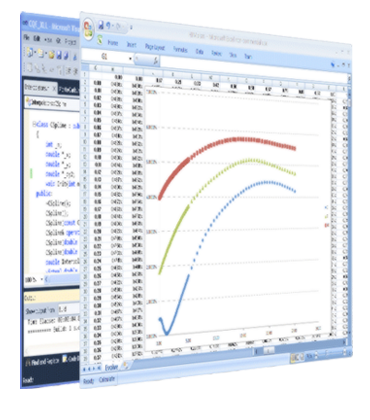

<section id="case-studies" class="case-studies padding-top-50 padding-bottom-30">
  <div class="container"> 

    <div class="heading-block text-center margin-bottom-50">
      <h2>What We Have Been Up To</h2>
      <span class="intro-style">Here are some recent, interesting projects we have undertaken for our clients.</span>
    </div>

    <div class="case">
      <ul class="row">

        <li class="col-md-4">
          <article> <a href="#">  </a>
            <div class="case-detail">
              <h5>Location Scoring</h5>
              <h6>Wag! Labs</h6>
              <p>Greenfield project to <strong>provide insight into dog walkers past, present, and future</strong>. We fused high-dimensional demographics with internal data, such as supply and demand, to prioritize zip codes for walkers by major metropolitan area.</p>
            </div>
          </article>
        </li>

        <li class="col-md-4">
          <article> <a href="#">  </a>
            <div class="case-detail">
              <h5>Fraud Prevention</h5>
              <h6>Tilt</h6>
              <p>Advanced project to <strong>detect bad actors, and prevent money laundering and chargebacks</strong> in Tilt's marketplace. We used a combination of network graph analysis, time-to-event models, and Bayesian inferential methods to combat fraud.<p></div>
              </article>
            </li>

            <li class="col-md-4">
              <article> <a href="#">  </a>
                <div class="case-detail">
                  <h5>Quantitative Analysis</h5>
                  <h6>ThreeMarkets</h6>
                  <p>Exploratory project to <strong>prototype trading indicators and strategies</strong> for American options.  We utilizied text-mining and sentiment analysis, stochastic calculus, and time-series analysis to generate alpha in backtests and live simulations.<p></div>
                    <p></p>
                  </div>
                </article>
              </li>
            </ul>

          </div>
        </div>
      </section>
